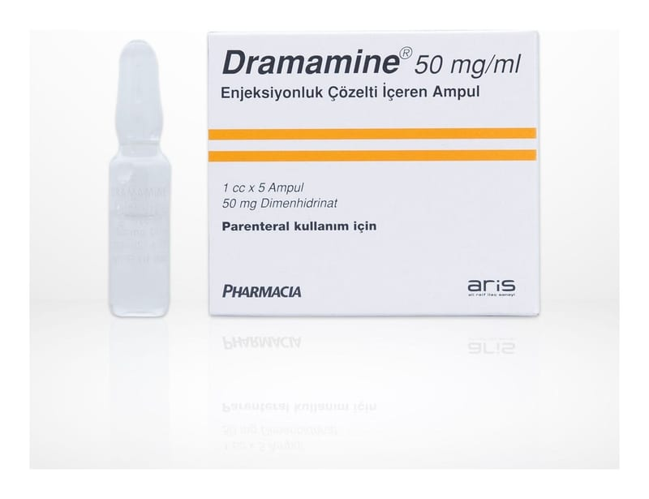

Dramamine 50 mg/ml Enjeksiyonluk Çözelti İçeren Ampul, 5 Adet

Ne için kullanılır
KT · Bölüm 1DRAMAMİNE®kutu içerisinde 5 adet 1cc’lik ampullerde sunulmaktadır. Her bir ampul 50 mg dimenhidrinat etken maddesi içerir.
Berrak, renksiz veya renksize yakın, hafif benzil alkol kokulu steril sıvıdır. DRAMAMİNE®aşağıdaki durumların tedavisinde kullanılır: • Hareket hastalığında: DRAMAMİNE®hareket ile ilgi olarak oluşan özellikle mide bulantısı, kusma ve /veya baş dönmesinin tedavisinde ya da önlenmesinde, • Diğer kullanımları: İç kulaktaki denge organı (vestibular) ile ilgili Meniere gibi hastalıkların semptomatik tedavisinde kullanılır.